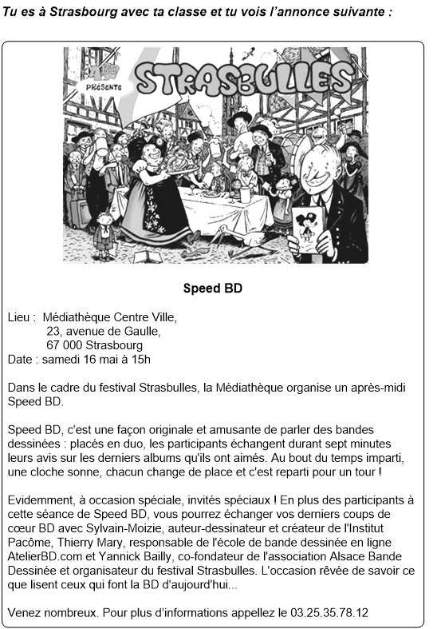

VERA-8 Französisch
Aufgabe
| Thema | Freizeit/Literatur |
| Textsorte | Aushang |
| Lesestil | selektiv |
| Kompetenzstufen | Teilaufgabe 1: A2 Teilaufgabe 2: B1 |

Teilaufgabe 1
| Richtige Lösung | nur das 2. Kästchen wurde angekreuzt (B) |
Teilaufgabe 2
| Richtige Lösung | nur das 2. Kästchen wurde angekreuzt (B) |
Diagnostisches Potenzial
Schülerinnen und Schüler, die diese Aufgabe richtig lösen, können einen längeren Text in Standardsprache zu einem Thema außerhalb ihres unmittelbaren Lebensumfeldes in seiner Gesamtheit erfassen und ihm zwei spezifische Informationen entnehmen. Dafür müssen sie Einzelinformationen kombinieren und schlussfolgern können. Dies entspricht im Bereich des Leseverstehens dem Niveau A2 bis B1.
Beschreibung der Aufgabe
Die Aufgabe verlangt, dass sich die Schülerinnen und Schüler in einem längeren Lesetext orientieren und entsprechend der Aufgabenstellung spezifische Informationen verstehen. Die Aufgabe untergliedert sich in zwei Teilaufgaben, bei denen jeweils vier Antwortoptionen vorgegeben sind. Davon trifft jeweils eine zu (muss angekreuzt werden).
Textvorlage ist ein Aushang zu einer kulturellen Veranstaltung in der Mediathèque in Straßburg, der so genannten Speed BD. Das übergreifende Thema BD dürfte vielen Schülerinnen und Schülern aus dem Unterricht der ersten Fremdsprache zumindest in Ansätzen geläufig sein, auch wenn sie wahrscheinlich die Veranstaltungsform Speed BD nicht kennen. Allerdings können Schülerinnen und Schüler, die über ein bestimmtes Weltwissen verfügen, von Speed Dating auf Speed BD schließen und eine Leseerwartung aufbauen.
Der Text ist auch vom Layout wie ein Aushang gestaltet: Eine Abbildung und die klare Anordnung der Informationen in deutlich voneinander abgesetzten Textpassagen erleichtern die Orientierung im Text. Für die Lösung der beiden Teilaufgaben sind lediglich zwei Sätze relevant, alle anderen Informationen können überlesen werden. Insofern stellen auch der themenspezifische Wortschatz (z. B. la médiathèque, organiser, le festival, original, l’album, l’occasion spéciale, les participants, la séance, l’auteur-dessinateur, le créateur, le co-fondateur, l’association, l’organisateur) und die ggf. auf dieser Stufe noch unbekannten Wendungen (z. B. en ligne, être placé en duo, les derniers coups de cœur, nombreux) kein Hindernis für das Lösen der Aufgabe dar. Auch die Häufung von Eigennamen insbesondere im letzten Teil (Strasbulles, Strasbourg, Sylvain-Moizie, Institut Pacôme, Tierry Mary, Yannick Bailly, l’association Alsace Bande Dessinée) dürfte keine Schwierigkeiten bereiten.
Genau gelesen werden müssen allerdings die Teilaufgaben, die vorgeben, auf welche Informationen die Aufmerksamkeit beim Lesen gerichtet werden muss. Gefragt sind die Definition und das Ziel der Veranstaltung Speed BD. Die Antwortmöglichkeiten geben wahrscheinliche Textinhalte vor, die beim Lesen mit dem Text abgeglichen werden müssen. Hilfreich ist, dass beide lösungsrelevanten Verben (parler und échanger) wörtlich im Text vorkommen und somit direkt auf die zentralen Textstellen verweisen.
Die höhere Schwierigkeit der Teilaufgabe 2 ist durch die erforderlichen Prozesse des Kombinierens und Schlussfolgerns bedingt.
Vor dem Lesen
Zur Lösung der Aufgabe können unterschiedliche Strategien angewandt werden, die sinnvoll miteinander verknüpft werden müssen.
- Leseerwartung aufbauen: Die Überschrift des Textes Speed BD gibt bereits einen deutlichen Hinweis auf das Thema. In der darauffolgenden Situierung wird die Textsorte (annonce) benannt. Auch das Layout des Textes (Abbildung und deutliche Gliederung in Absätze) entspricht dem eines Aushangs.
- Konkretisierung der Leseerwartung: Mit dem Lesen der Teilaufgaben und der dazugehörigen Antwortoptionen wird die Leseerwartung weiter konkretisiert. Es geht darum, die Definition und das Ziel der Veranstaltung Speed BD herauszufinden.
- Vorwissen/themenbezogenen Wortschatz aktivieren: Das Thema BD/Comic bzw. die Veranstaltungsform des Speed Dating dürfte der Mehrzahl der Schülerinnen und Schüler bekannt sein. Auch Kenntnisse über die alltägliche Textsorte Aushang dürften bei den meisten vorhanden sein.
- Anforderungen der Aufgabe ableiten: Wichtig ist, dass vor dem Lesen ganz klar ist, was die Aufgabe verlangt. Es geht um das Erfassen der genannten spezifischen Informationen. Die Aufmerksamkeit muss entsprechend der Leseerwartung auf diese beiden Informationen gelenkt werden.
Beim Lesen
- Textstruktur nutzen/Lesestile kombinieren: Wer über Textsortenkenntnisse verfügt, kann aufgrund des Layouts sehr schnell überblicken, dass sich die gesuchten Informationen nur in den beiden mittleren längeren Textpassagen befinden können. Nach einem ersten Überfliegen des Textes können die beiden entsprechenden Textstellen dann gescannt werden, um herauszufinden, welche Sätze lösungsrelevant sind. Diese Sätze werden dann genauer gelesen, um Antwortoptionen ausschließen zu können. Das Layout erleichtert die Orientierung im Text. Aufmerksamkeit auf spezifische Informationen fokussieren: Die Satzanfänge der Teilaufgaben verweisen auf die gesuchten Informationen (Teilaufgabe 1: Definition von Speed BD, Teilaufgabe 2: Ziel von Speed BD).
- Auf Schlüsselbegriffe konzentrieren/diese im Text erkennen: Entsprechend der Teilaufgaben und Antwortmöglichkeiten achten die Schülerinnen und Schüler beim Lesen auf die Schlüsselbegriffe. In beiden Teilaufgaben gibt es starke lexikalische Überlappungen zwischen Formulierungen in den Antwortmöglichkeiten und Text durch die wörtliche Übernahme der Verben parler (Teilaufgabe 1/Antwortmöglichkeit B) und s’échanger (Teilaufgabe 2/Antwortmöglichkeit B). Diese Übereinstimmung hilft den Lernenden, die für die Antworten wesentlichen Sätze zu identifizieren.
- Einzelinformationen vergleichen/schlussfolgern: Ein Vergleich zwischen Antwortmöglichkeit B/Teilaufgabe 1 und Text bestätigt umgehend durch eine weitere Überlappung, dass B die Lösung ist (B: parler du contenu de différentes BD, Text: parler des bandes dessinées). Beide Aussagen sind synonym. Teilaufgabe 2 hingegen erfordert Prozesse des Schlussfolgerns, da inhaltlich zunächst auch Antwortmöglichkeit C als Lösung in Frage kommen könnte. C kann jedoch aufgrund der Teilüberlappung von (s’)échanger zwischen B und Text ausgeschlossen werden. Für die Lösung muss die von der Antwortmöglichkeit B vorgegebene Spezifizierung des BD qu’on a lues aus les derniers coups de cœur (Text) zusätzlich inferiert werden.
- Wichtiges von Unwichtigem trennen/irrelevante Informationen ignorieren: Aufgrund des Wiedererkennens der Schlüsselbegriffe der Antwortmöglichkeiten sind nur die Textpassagen 3 und 4 sind relevant. In Passage 4 können außerdem alle Namen überlesen werden, die wesentliche Information befindet sich im ersten Teil von 4.
Nach dem Lesen
- Antwort prüfen: Aufgrund der hohen Anzahl der Antwortmöglichkeiten ist es sinnvoll, die Lösungen in einem zweiten Lesedurchgang abzugleichen und zu überprüfen, ob die drei verworfenen Antwortmöglichkeiten wirklich nicht auf den Text zutreffen.
Weiterarbeit und Förderung
Bei richtiger Lösung
Bereitet die Lösung der Aufgabe keine Schwierigkeiten, so können komplexere Aufgaben zum selektiven Leserverstehen und auch Aufgaben zum detaillierten Leseverstehen folgen. Diese Aufgaben sollten auch Themen außerhalb des unmittelbaren Lebensumfeldes der Schülerinnen und Schüler einbeziehen. Eine zusätzliche Schwierigkeit stellen auch Aufgaben dar, bei denen keine möglichen Antworten vorgegeben sind, sondern die erfasste Information selbstständig in Form einer Kurzantwort notiert werden muss.
Bei falscher Lösung
Sind Schülerinnen und Schüler nicht in der Lage, die Aufgabe zu lösen, sollten nochmals gemeinsam die Situierung, die Teilaufgaben und die Antwortmöglichkeiten genau gelesen und besprochen werden. Daraus lässt sich das oben beschriebene Vorgehen (Aufbau und Spezifizierung der Leseerwartung/Aktivierung von Vorwissen aus verschiedenen Bereichen/Nutzen des Layouts als Verständnishilfe/ Konzentration auf spezifische Informationen/Nutzen von Schlüsselwörtern/Überlesen unwichtiger Textpassagen) ableiten. Die Lernenden können besondere Schwierigkeiten benennen. Mit Hilfe der markierten Schlüsselbegriffe werden gemeinsam die relevanten Textstellen aufgefunden und Verstehensinseln bewusst gemacht. Dabei wird deutlich, dass der Text nicht komplett verstanden werden muss und es für die Lösung reicht, sich auf das Umfeld der Schlüsselbegriffe der Antwortmöglichkeiten zu konzentrieren. Ein anderer Weg ist, dass Schülerinnen und Schüler mit der richtigen Lösung ihren Mitschülerinnen und Mitschülern erklären, wie sie vorgegangen sind und auch auf diese Weise mögliche Bearbeitungsstrategien bewusst gemacht werden.
Inwiefern textsortenspezifische Layouts Verständnishilfe bieten können, kann an verschiedenen Textsorten (z. B. Informationsflyer, Rezept, Gebrauchsanleitung, Aushang) nachvollzogen werden. Zur schnelleren Orientierung im Text können die Schülerinnen und Schüler selbst die zentralen Informationen markieren. Um Textstrukturen und die Anordnung von Informationen in einem Text nachzuvollziehen, bietet es sich an, die Lernenden selbst Layouts von Texten gestalten zu lassen.
Darüber hinaus kann es sinnvoll sein, die Schülerinnen und Schüler zu einem Lesetext selbst mögliche Aufgaben entwickeln zu lassen. Indem sie erkennen, dass in vielen Textsorten nur spezifische Informationen (z. B. Personen, Handlungen, Daten, Preise, Orte) wesentlich sind, lernen sie ihre Aufmerksamkeit beim Lesen gezielt auf diese Textstellen zu richten. Im Hinblick auf die Erweiterung und Festigung des Wortschatzes ist es auch sinnvoll, die Lernenden selbst verschiedene Antwortmöglichkeiten zu einer Aufgabe entwerfen zu lassen und dabei gezielt Umschreibungen einzubeziehen.